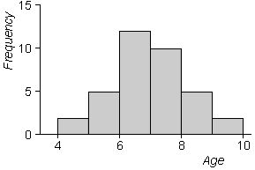

Histograms describe the density of values

Stem and leaf plots (and dot plots) separately identify each individual value in a data set with a symbol. In large data sets, it is unnecessary, and indeed distracting, to show this much detail.
With a good choice of the number of classes, the density of values is described by the 'canopy' shape made by the ends of the rows of leaves, as illustrated in the example on the right.
A histogram directly displays this canopy shape and therefore summarises how the density of values changes over the range of the data.
Since individual values are not shown, histograms are particularly useful displays for large data sets.
Histograms
Stacked dot plots and stem and leaf plots are closely related to histograms. Indeed, replacing each cross or leaf by a rectangle gives a histogram.
Example
The stem and leaf plot below shows the ages of 36 primary school students when they first reached a reading age of 8.
Drag the slider to change the stem and leaf plot into a histogram.
Histograms are usually drawn above a horizontal axis (rather than against a vertical one). In the simplest type of histogram, the axis is split into classes of equal width. The height of the rectangle above any class equals the number of values that fall in the class. This is called the frequency of the class.
The diagram below is a more conventionally oriented histogram of the age data.
